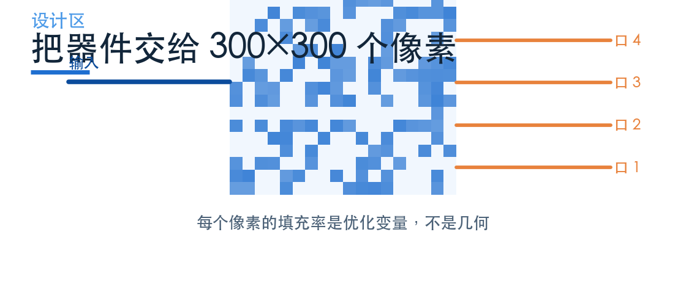
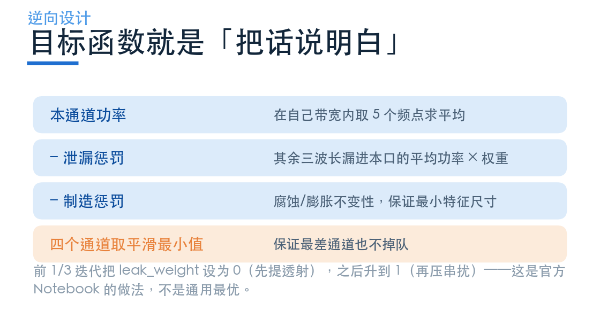
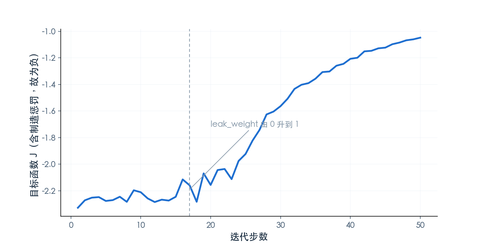
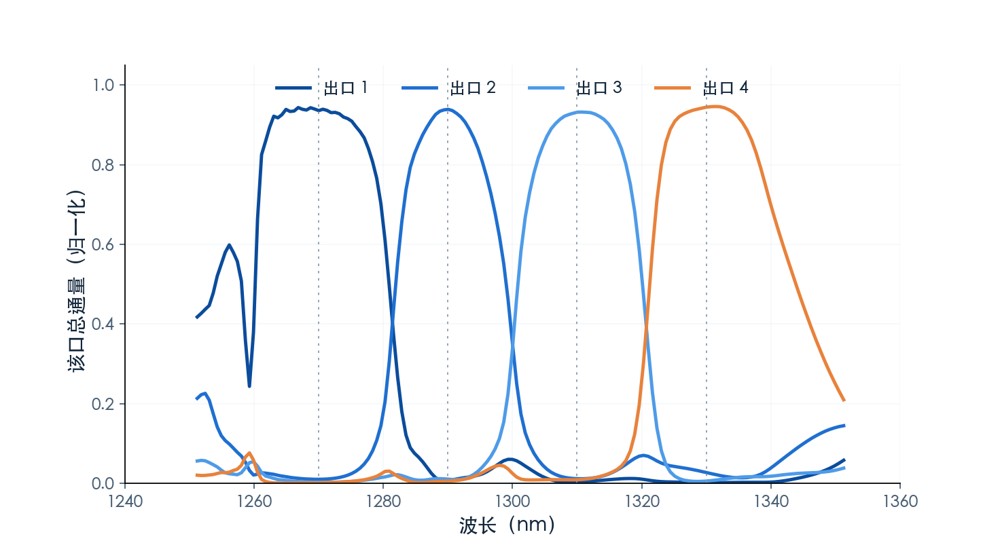
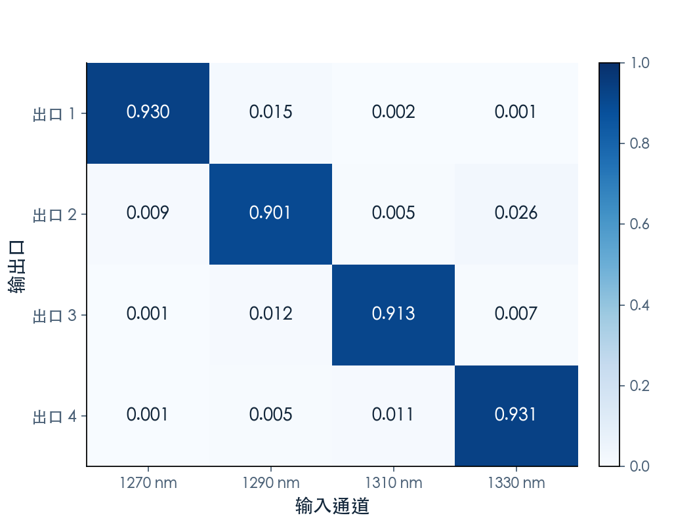

不写几何，只写目标
待审稿：本文处于独立 PR 审核阶段，尚未收录为正式内容。定量结论、素材来源与授权仍需指定业内审核者核查。
前面几篇的器件都是「先想结构，再调参数」：MMI 是矩形，AWG 是一排波导，微环是一个圈。结构由人定，优化只是在参数空间里找最优点。
逆向设计把这件事反过来了：不告诉算法用什么结构，只告诉它要什么结果。器件形状由几千个像素的填充率表示，算法用梯度一步步把像素推向目标。
本篇用官方 Autograd9WDM 案例，按本次完整 50 步优化的结果讲三件事：目标函数怎么把「分波」翻译成数学，优化过程长什么样，以及这套方法的边界在哪。
01 设计区：300×300 个像素，每个都是变量
案例的设计区是 4.5×4.5 μm 的方块，离散成 300×300 个像素（步长 15 nm）。每个像素的「填充率」是一个 0 到 1 之间的连续变量，0 是空气，1 是硅。
优化过程中，这些变量连续变化；最后用投影函数（projection）把它们推向 0 或 1，得到一个二值化的结构。投影强度 β 从 1 逐渐升到 50，相当于「先让它自由生长，再逐步逼它变成黑白」。
设计区左边一个输入波导，右边四个输出波导，分别对应 1270 / 1290 / 1310 / 1330 nm 四个通道。

02 目标函数：把「分波」翻译成四句话
逆向设计最难的不是算法，是把需求写成目标函数。这个案例的目标函数有四层。
第一层，本通道功率。 在每个通道的带宽内取 5 个频点，算该口接收到的功率，求平均。这是「想要的」。
第二层，泄漏惩罚。 其余三个波长漏进本口的平均功率，乘一个权重 leak_weight 减掉。这是「不想要的」。
第三层，制造惩罚。 用腐蚀/膨胀不变性约束最小特征尺寸，保证设计出来的结构能造。这是「能不能做」。
第四层，四个通道取平滑最小值。 不是取平均——平均值会让三个通道好、一个通道差的设计也能得高分。取最小值保证最差的那个通道也不掉队。

还有一个细节值得注意：leak_weight 是分段变化的。前 1/3 迭代设为 0（先专心把透射提上去），之后升到 1（再压串扰）。这是官方 Notebook 的做法，不是通用最优——先提透射再压串扰，是为了避免一开始就被惩罚项困在低透射的局部解里。
03 优化过程：50 步，每步一次前向 + 四次伴随
伴随法（adjoint method）的核心是：一次前向仿真得到目标函数值，一次伴随仿真得到目标函数对所有像素的梯度。计算量与像素数无关，这是它能处理 9 万个变量的原因。
本次运行完整跑了 50 步，每步的实际开销是一次前向加四次伴随——四次是因为目标函数里有四个通道，每个通道的平滑最小值都触发一次伴随。

曲线有两个阶段。前 17 步（leak_weight = 0）目标函数只反映透射，爬升较快；第 17 步之后加入泄漏惩罚，目标函数会掉一截，然后继续爬——掉的这一截不是变差，是评价标准变严了。
04 结果：四个口各接住一个波长
末态结构用 151 个频点重新评价，得到四个出口的透射谱。

把每个通道的功率按「出口 × 通道」排成矩阵，对角亮、其余暗，就是分波成功的样子。

同一末态结构在四个中心波长下的场分布如下。均取 field 监视器的 XY 平面（z = 0），播放 Re(Ez) 的单频相位变化。原始模型是 2D，采用 GUI 原生平面动画；这不是真实脉冲传播录像，也不表示优化过程。


关键读数：
- 四个通道插损 0.31 / 0.45 / 0.40 / 0.31 dB，平均 0.37 dB，最差 0.45 dB；
- 串扰 −21.71 / −18.26 / −21.50 / −22.13 dB，最差 −18.26 dB（口径：其余三个通道漏入本口的平均功率与本通道功率之比）；
- 目标函数从 −2.329 升到 −1.048。
两点观察值得记下来。
通带是平顶的，不是洛伦兹形。 四个口的峰值都在 0.9 附近，顶部有一段平坦区间，两侧才快速滚降。这正是目标函数里「带宽内 5 点平均」的功劳——只压中心点会得到尖峰，取平均才逼出平顶。
第二个通道的串扰最差。 −18.26 dB 比其余三个口差了 3 dB 左右。这是单次优化的典型结果：smooth_min 保证最差通道不掉队，但不会把四个通道拉到一样好。
这些数字的绝对值不能直接和商用器件比。原因有三：设计区只有 4.5 μm 见方，是演示尺度；模型是 2D，忽略了垂直方向的模场；优化只跑了一次，没有做多种子统计。
05 这套方法的边界
第一，2D 不等于 3D。 案例用 2D 是为了把成本压到可接受范围。4.5 μm 见方的 2D 设计区做出来的插损与串扰，不能当作可制造器件的性能。
第二，优化结果不可复现到小数点。 原文固定了随机种子，但不同 Tidy3D 版本与硬件可能给出不同轨迹。本文只报本次运行的数值，不做多种子统计。
第三，目标函数写错，结果一定错。 逆向设计不会「理解」你要什么，它只会最大化你写的那个式子。串扰的定义、带宽的取法、通道均衡的方式，任何一处写松了，出来的结构就会钻空子。
第四，可制造性是独立的约束。 第三层惩罚只能保证最小特征尺寸，保证不了工艺偏差下的性能。真正要回答「能不能造」，需要工艺感知的模型——原计划的第三个案例就是做这件事，但需要 PreFab 账号，本次没有授权，只在综述里点名。
06 什么时候该用它
逆向设计不是万能的。它适合三种情况：指标很特殊、没有现成结构可套；设计区很小、像素数可控；有明确的仿真闭环、能承受多次迭代。
不适合的情况也很清楚：需要大批量、低成本、工艺成熟的器件——这种时候 AWG 或 MMI 的参数化设计更划算，因为结构本身就保证了可制造性。
一句话：参数化设计是「在已知结构里找最优点」，逆向设计是「在未知结构里找可行点」。前者便宜、可预测，后者灵活、贵。选哪个，取决于你的问题有没有现成的结构可套。
下一篇做横向比较：把 MMI、AWG/EDG、逆向设计放在一起，看通道数、间隔、串扰、面积、温控这五条约束怎么联立。
案例页：Adjoint optimization of a WDM。想自己跑，可以从国内产品入口注册后进入案例库；完整 50 步的估价约 5.5 FC，比想象中便宜。